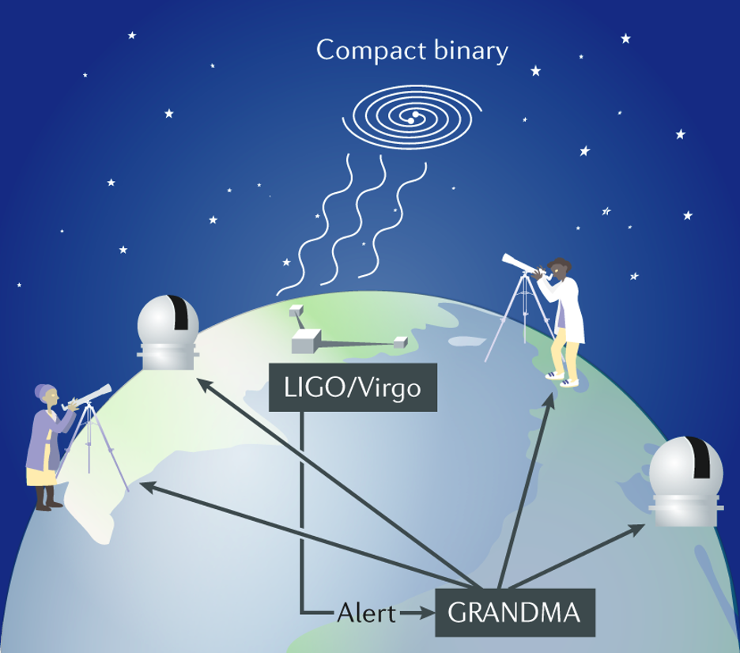

Global Rapid Advanced Network Devoted to the Multi-messenger Astronomer (GRANDMA) Cookbook#
Currently, under construction. As of April 10th - Cristina Andrade
User Guide#
- 1. Signing Up for GRANDMA’s Utilities
- 2. Enrolling in Shifts
- 3. The Workflows
- Responsibilities of the Shifter (FA) & Weekly Coordinator
- 4. Determining GW Follow Up
- 5. Determining GRB Follow Up
- 5.1 What GRBs Should Be Observed?
- 5.2 Procedure for Observing GRBs
- 6. How to Respond to Different Astrophysical Alerts
- 7. Triggering & Notifying Telescopes as a Follow-Up Advocate (Shifter)
- 7.1 Observability & Beyond!
- Usage Levels of Telescopes
- Telescope teams
- A. Prompt Response - Automatic / Semi-Automatic Triggering
- B. Regular Telescopes (by contact for observations via FAs)
- C. Telescopes with Specific Contact
- D. Telescopes with Unknown Status
- Where to Find Telescope Aperture in SkyPortal
- 7.2 Contacting Telescopes
- 7.1 Observability & Beyond!
- 8. Get the Observation Plan (Only for Telescope Teams)
- 9. Skyportal: Creating Sources, Observation Plans and Uploading Photometry for Follow-up Advocates
- STDWeb Simple Transient Detection for the Web HANDBOOK
- 11. Shift Team Logs: Importance and Best Practices
- 12. GCN Release Protocol
- 13. Follow-Up Advocate (FA) Manual: Exercise Sheet
- 14. Raw Transcripts of Videos
- 14.1 What is the role of a follow-up advocate (shifter) in GRANDMA during the next GW observing run (O4)?
- 14.2 How to register as a GRANDMA followup-advocate (shifter) ?
- 14.3 Preliminary alert slack message
- 14.4 Notify telescope teams and Observation plan
- 14.6 Plans, Images, Photometry (telescope teams)
- 14.7 GW source candidates - Transients (follow-up advocate)
- 14.8 GW alert: different types
- 14.9 Non-European weekly coordinators : How to create a shift in Skyportal
- 14.10 European weekly coordinator How to create a shift in Skyportal
- 14.11 Managing the ZTF candidates (follow-up advocate training)
- 14.12 Managing the Annotation and Adding Sources (Follow-up Advocate Training)
- 14.13 Sources candidates of GW - advices
- 14.14 Responding to Gravitational Wave Alerts: Follow-Up Advocate
- 15. Addendums to Shift Protocol
- Acknowledgments